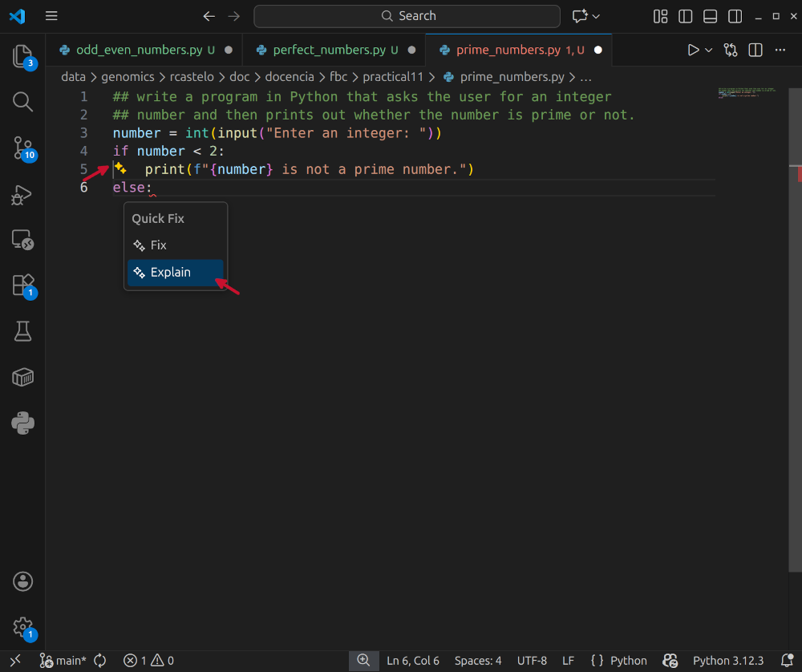

Ctrl+Shift+X). 
Install button. 
The learning objectives for this practical are:
To do this practical you need an installation of the text editor VS
Code, R and RStudio. You can find the instructions in the setup link on how to install, VS Code, R and RStudio
in your system. Make a directory called practical11 for
this practical.
To add the GitHub Copilot extension to VS Code, follow these steps:
Ctrl+Shift+X). Install button. This will install in fact two extensions, GitHub Copilot and GitHub Copilot chat. The first one allows you to get in-line code suggestions as you type, while the second one is a conversational AI assistant that allows you to have a chat with GitHub Copilot to help you with your coding-specific tasks.
Once the GitHub Copilot extension is installed, you need to authenticate your GitHub account in VS Code. This will only work if your GitHub account has access to GitHub Copilot. If you don’t have access to GitHub Copilot, you can request access as a student by following the instructions in this link.
To authorise VS Code to access your GitHub account, follow these steps:
Sign in to use AI Features. 
Continue with GitHub. 
Continue. 
Authorise Visual Studio Code.

VS Code is now authorised to access your GitHub account.
You can now close the web page and go back to VS Code, where you may be
asked whether you trust the authors of the files in this workspace.
Click on Trust Workspace & Continue. 
If you GitHub acccount is properly linked to VS Code, you should see a tiny Copilot icon in the bottom right corner of the VS Code window. If this icon is not visible or is crossed out, it means that GitHub Copilot is not properly linked to your GitHub account. In such a case, go back to the previous section and make sure you have properly linked your GitHub account to VS Code.
Sometimes, the extensions may be installed and your GitHub account
properly linked, but VS Code may ask you to either trust the current
workspace/file that you have opened, or to click on the popup window
saying Enable AI features.
To start using GitHub Copilot, open a new file in VS Code called
odd_even_numbes.py and type the following two comment
lines:
## write a program in Python that asks the user for an integer
## number and then prints out whether the number is odd or even.As you type the second comment line, you should see a suggestion from GitHub Copilot appearing in light grey text, like in the image below.

This suggestion is the code that GitHub Copilot thinks is the most likely to be what you want to write based on the comments you have written and the context of the file.
To accept the suggestion, press the Tab key, and now
save the file and run it in the shell to see that it works as
expected.
Exercise: Using GitHub Copilot, write a Python program that asks the user for an integer number and then prints out whether the number is a perfect number or not. A perfect number is a positive integer that is equal to the sum of its proper divisors, i.e., excluding itself from the sum. For example, 6 is a perfect number because its positive divisors are 1, 2, and 3, and their sum is 6.
Open a new file in VS Code called prime_numbers.py and
type the following comment line:
## write a program in Python that asks the user for an integer
## number and then prints out whether the number is prime or not.As you type the second comment line, you should see a suggestion from
GitHub Copilot appearing in light grey text consisting of a single line
of code, press tab to accept it. A second line will be suggested, press
tab to accept it, and so on until you see two yellow stars appearing
next to the one of the suggested lines, as in the image below. Click on
the yellow stars, and then click on the option Explain.

Try to understand the explanation given by GitHub Copilot and then accept the rest of the suggested code. Run the program to see that it works as expected.